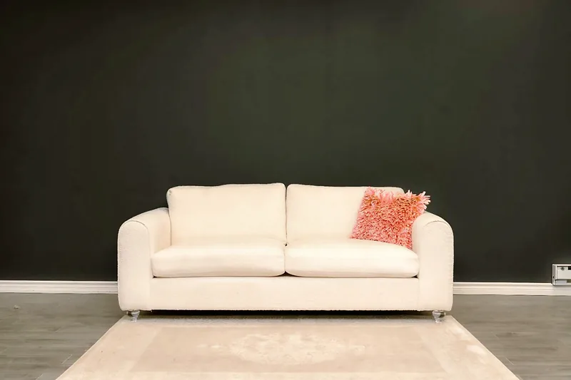

Most people shop for a sofa by walking a showroom and picking the closest match. A custom sofa works the other way around: you start with your room and how you live, and the sofa is built to suit. Here is what that difference means in practice.
Size that actually fits
Store-bought sofas come in a few set widths and depths. A custom sofa is built to your exact width, depth and seat height. That matters in Toronto condos, where a few inches decide whether a sofa fits the wall or makes it through the elevator, and in family rooms where a standard sectional leaves an awkward gap.
Any fabric, any colour
With a store-bought sofa, you choose from the fabrics the retailer stocks. With a custom sofa, you choose any fabric, velvet, bouclé or leather, in the exact colour you want. At our Mississauga showroom you can see and feel the options in person before you decide.

Your style and details
Custom means you choose the design: tufted with crystal buttons, channel-stitch, curved, Chesterfield, modular or chaise, plus the cushions, pillows, stitching and legs. You can also bring a photo of a sofa you like and we will talk through how to build it in your size and fabric.
Made in Canada
Many store-bought sofas are made overseas and shipped. Our sofas and sectionals are built in our own Mississauga workshop, so you deal directly with the people making your furniture.
Timing
If you need a sofa today, a floor model is the fastest option. Otherwise, a custom sofa is quicker than many people expect: most of our custom pieces are completed within 1–3 weeks, depending on the design and fabric.
Price
Custom does not have to mean expensive. Because we build in Mississauga and sell factory-direct at wholesaler prices, there is no retail markup. Every sofa is quoted to your design, so you know the price before we start.
When store-bought makes sense
If a standard size fits your space, you like a stock fabric and you need the sofa immediately, a store-bought sofa can be the right call. If any of those don’t fit, custom is worth a look.
How to order a custom sofa
- Measure the wall or space, plus doors, hallways and elevators on the way in.
- Collect photos of styles you like.
- Visit our showroom at 7025 Tomken Rd, Mississauga, or call us to talk through the design.
- Choose your fabric, colour and details, and get your quote.
- We build your sofa in Mississauga and deliver it across Toronto, the GTA and Ontario.
See our custom sofas and sectionals or browse the collections.
Quick answers
How long does a custom sofa take?
Most custom pieces are completed within 1–3 weeks, depending on the design and fabric selected.
Can you make a sofa to fit a Toronto condo?
Yes. Every sofa is built to order, so we can size it for condo walls, elevators and narrow hallways.